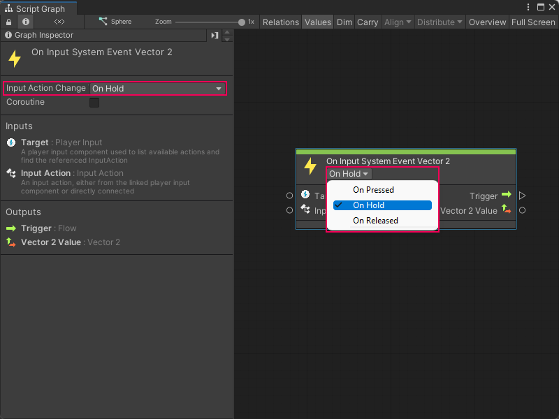
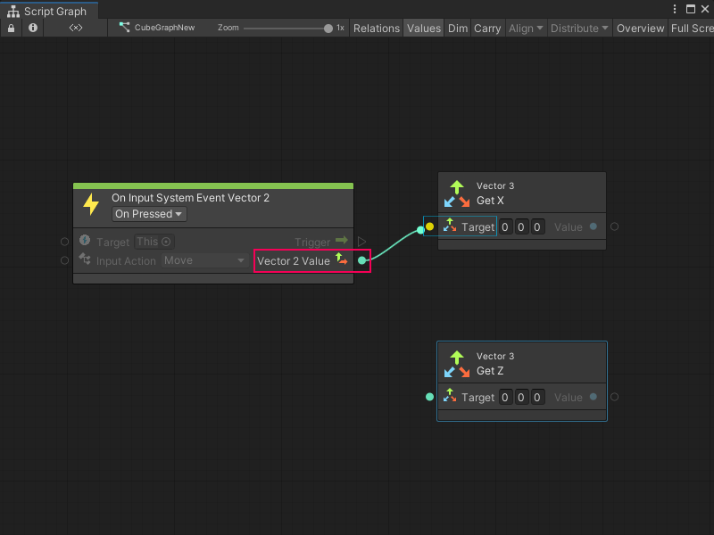

Capture input with the Input System package¶
[!IMPORTANT] If you don’t complete the prerequisite configuration for your project, you can’t use the Input System package with Visual Scripting. For more information, see Input System package prerequisites.
To use the Input System package with Visual Scripting to capture input in your project:
Open or create a Script Graph attached to the GameObject that you want your users to move.
[!includeopen-fuzzy-finder]
Go to Events > Input or search for On Input System Event.
Select an Input System Event node. In this example, select the On Input System Event Vector 2 node to add it to the graph.
Set the On Input System Event Vector 2 node’s Input Action Change Type control to On Hold:

In the Input Action list on the On Input System Event Vector 2 node, select an Input Action to trigger the node. In this example, select Move.
[!NOTE] By default, Visual Scripting displays all Input Actions from the Input Action asset attached to your current GameObject’s Player Input component.
[!includeopen-fuzzy-finder]
[!TIP] If a context menu appears when you right-click, select Add Node to open the fuzzy finder.
Go to Codebase > Unity Engine > Vector 3 or search for Vector 3 Get X.
Select Get X to add the Vector 3 Get X node to the graph.
[!includeopen-fuzzy-finder]
Go to Codebase > Unity Engine > Vector 3 or search for Vector 3 Get Z.
Select Get Z to add the Vector 3 Get Z node to the graph.
Select the Vector 2 Value output port on the On Input System Event Vector 2 node.
Make a connection to the Target input port on the Vector 3 Get X node:

Select the Vector 2 Value output port.
Make a connection to the Target port on the Vector 3 Get Z node.
[!includeopen-fuzzy-finder]
Go to Codebase > Unity Engine > Transform or search for Translate.
Select Transform: Translate (X, Y, Z) to add the Translate node to the graph.
Select the Value: Float output port on the Vector 3 Get X node.
Make a connection to the X float input port on the Translate node.
Select the Value: Float output port on the Vector 3 Get X node.
Make a connection to the Z float input port on the Translate node.
The finished graph looks similar to the following image:
![An image of the Graph window, that displays the final result of a simple input capture graph with the Input System package. An On Input System Event Vector 2 node connects its output trigger port to the input trigger port on a Transform Translate node. The On Input System Event Vector 2 node's Vector 2 output port connects to the Vector 3 input on a Vector 3 Get X node and a Vector 3 Get Z node. The Vector 3 Get X node connects its Float result port to the X input port on the Translate node. The Vector 3 Get Z node connects its Float result port to the Z input port on the Translate node.](../../../../../../_images/vs-input-new-system-example.png)
To enter Play mode, select Play from the Unity Editor’s Toolbar.
While in the Game view, press a key defined under the Input Actions asset for Move in the Player Action Map.
The GameObject moves along the X or Z axis in the Game view, based on the key pressed and the Input Actions asset.
For more information on how to define Input Actions, see Input Action Assets in the Input System package documentation.